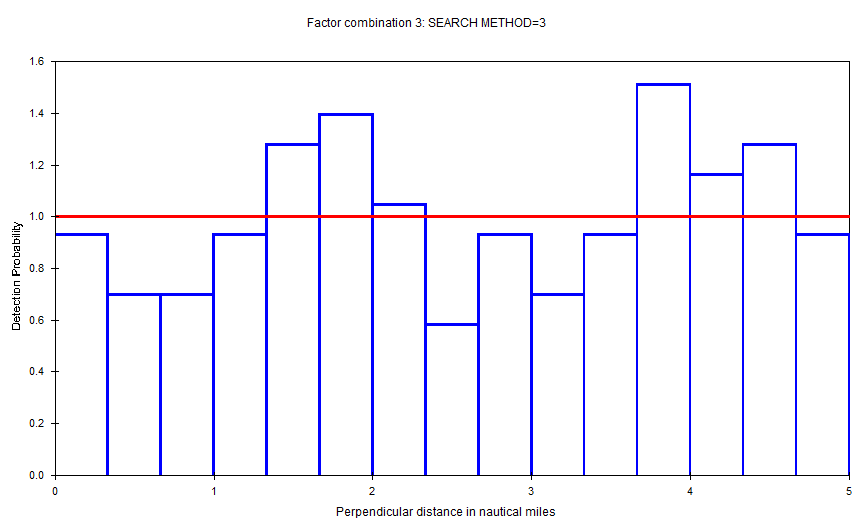

Covariates in the detection function
Distance for Windows exercise Solution
Hawaiian Amakihi
Here is the Results Browser table of the models described in Marques et al. (2007), with strata (“strat”) representing the repeated surveys performed. The project containing these results can be found in fTAMAUK07.zip.
| Name | # params | Delta AIC | AIC | ESW/EDR | D | D LCL | D UCL | D CV |
|---|---|---|---|---|---|---|---|---|
| HR OBS MAS w82.5 | 5 | 0 | 10777.72 | 45.5 | 7.17 | |||
| HR OBS w82.5 | 4 | 1.73 | 10779.45 | 45.3 | 7.23 | |||
| HRpool OBS HAS w82.5 | 9 | 5.62 | 10783.34 | 46.0 | 7.02 | |||
| HN OBS w82.5 | 6 | 7.12 | 10784.84 | 41.9 | 8.49 | |||
| Unicos by strat w82.5 | 12 | 13.5 | 10791.22 | 7.33 | 6.80 | 7.91 | 0.038 | |
| HN Obs HAS by strat 82.5m | 9 | 14.18 | 10791.9 | 43.5 | 7.92 | |||
| HN OBS MAS w82.5 | 5 | 15.52 | 10793.24 | 43.4 | 7.97 | |||
| HR by strat w82.5 | 14 | 18.58 | 10796.31 | 6.82 | 5.99 | 7.77 | 0.066 | |
| HN by strat f0 pooled w82.5 | 5 | 21.40 | 10799.12 | 43.9 | 7.82 | 6.03 | 10.15 | 0.133 |
| HN by strat w82.5 | 15 | 22.87 | 10800.59 | 8.00 | 6.89 | 9.28 | 0.076 | |
| Unicos by strat f0 pooled w82.5 | 2 | 25.11 | 10802.83 | 44.3 | 7.67 | 7.00 | 8.39 | 0.046 |
| HR MAS w82.5 | 3 | 29.18 | 10806.9 | 47.9 | 6.57 | |||
| HR by strat f0 pooled w82.5 | 2 | 29.90 | 10807.62 | 47.3 | 6.73 | 5.96 | 7.60 | 0.062 |
| HRpo0l HAS w82.5 | 7 | 31.62 | 10809.34 | 47.8 | 6.60 | |||
| HN HAS by strat 82.5m | 7 | 34.73 | 10812.45 | 43.3 | 8.04 | |||
| HN MAS w82.5 | 3 | 35.36 | 10813.08 | 43.3 | 8.06 |

You will note there are no measures of precision associated with the density estimates when a single detection function (across strata) is used to estimate density. Do you understand why this is the case? If not, carefully read the message included in the Distance for Windows output at right associated with output from one of these models.
Analysis of dolphin sightings data
To obtain an overall impression of the data it is useful to fit a detection function histogram with many intervals (you may have problems fitting to the maximum number of 30, but 25 intervals should be OK). The spikes in the histogram suggest that the data has been rounded to zero and possibly other values. The q-q plot also indicates problems with the model at zero distances. To mitigate these problems, use the Intervals tab in the Data Filter to pool the data into a few intervals – 10 to 15 intervals work. For reasons described in the instructions (lacking information regarding effort and study area size), we restrict our interest in the analysis to the fitting of the detection function, measured in the table below by effective strip width (ESW).
For the MCDS analysis, cluster size was fitted as a continuous variable, whereas, month, Beaufort, cue and search position were fitted as factor variables. Table 1 summarises the results.
Table 1. Effective strip width estimates for the different models.
| Name | # params | Delta AIC | AIC | ESW/EDR | ESW/EDR CV |
|---|---|---|---|---|---|
| interval hn search method | 4 | 0 | 5743.4 | 3.38 | 0.017 |
| interval hn log cluster | 2 | 11.13 | 5754.6 | 3.42 | 0.017 |
| interval hn cos | 2 | 16.72 | 5760.2 | 3.02 | 0.045 |
| interval hn cluster | 2 | 17.22 | 5760.7 | 3.50 | 0.017 |
| interval hn month | 3 | 22.12 | 5765.6 | 3.44 | 0.017 |
| interval hn sea state | 2 | 26.37 | 5769.8 | 3.45 | 0.017 |
| interval hn cue type | 4 | 27.23 | 5770.7 | 3.44 | 0.017 |

Based on the AIC, it seems as though the model including search method is best, however, there were warning messages about the detection function fitting and cluster size estimation. Before going on and looking at models which include two covariates, it is worth looking at the search model in more detail. The detection functions have very different scale parameters, for example, the detection function for search method 3 (using a helicopter) has a very wide shoulder and so the scale parameter is very large. See figure at right.
This suggests that the observers were seeing everything out to 5 nm and so detection does not decrease with distance as it does with the other methods. One assumption of MCDS is that the perpendicular distance distributions of the covariate factor levels have the same shape. It may be worth refitting the model ignoring the observations made by the helicopter. Data can easily be selected/ignored using the Data filter | Data selection tab. The selection criteria will be of the form ‘[Search method] IN (0,2,5)’